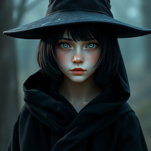
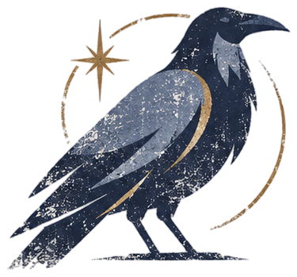
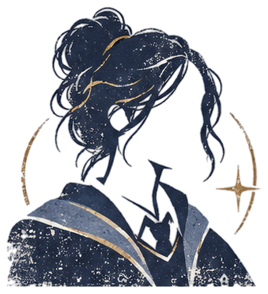
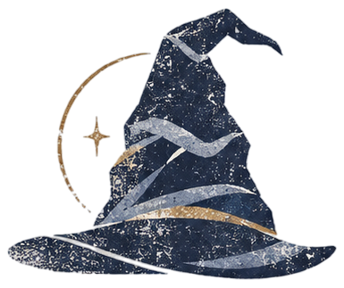

ВальраДракенмар
Кто не способен ничем пожертвовать - не сможет ничего изменить.
Если бы я был(а) Вороном, я бы загадала загадку про...
Какой смысл у смысла?

когда я поступала в Хогвартс, я надеялась…
Надеялась, что найду тихое и спокойное местечко, где смогу быть самой собой.
мои первые три вопроса после поступления в хогвартс
1. Как не бояться общаться с другим?
2. Сколько предметов я могу изучать?
3. Как правильно отыгрывать РПГ?


почему Когтевран?
типичный Когтевран
В Когтевранской Башне орлята набираются ума... С помощью двери, регулярно ставящей их в тупик.
мои главные таланты
Мастер незаметно и бесследно исчезать. Гроссмейстер по созданию неловких пауз.
таланты, которые хочу раскрыть
Наблюдательность, феноменальная память.
чуть больше обо мне
Я та, кто больше всего на свете любит тишину Тишину библиотек, где шорох страниц - единственный звук. Мой главный спутник - любопытство, которое гонит меня исследовать дальние уголки замка.